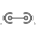
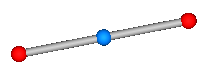
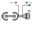

SphericalSphericalSpherical - spherical joint aggregation (1 constraint, no potential states) with an optional point mass in the middle |

|
Information
This information is part of the Modelica Standard Library maintained by the Modelica Association.
Joint that has a spherical joint on each of its two ends. The rod connecting the two spherical joints is approximated by a point mass that is located in the middle of the rod. When the mass is set to zero (default), special code for a massless body is generated. In the following default animation figure, the two spherical joints are represented by two red spheres, the connecting rod by a grey cylinder and the point mass in the middle of the rod by a light blue sphere:

This joint introduces one constraint defining that the distance between the origin of frame_a and the origin of frame_b is constant (= rodLength). It is highly recommended to use this joint in loops whenever possible, because this enhances the efficiency considerably due to smaller systems of non-linear algebraic equations.
It is sometimes desirable to compute the rodLength of the connecting rod during initialization. For this, parameter computeLength has to be set to true and instead one other, easier to determine, position variable in the same loop needs to have a fixed attribute of true. For example, if a loop consists of one Revolute joint, one Prismatic joint and a SphericalSpherical joint, one may fix the start values of the revolute joint angle and of the relative distance of the prismatic joint in order to compute the rodLength of the rod.
It is not possible to connect other components, such as a body with mass properties or a special visual shape object to the rod connecting the two spherical joints. If this is needed, use instead joint Joints.UniversalSpherical that has this property.
Parameters (10)
| animation |
Value: true Type: Boolean Description: = true, if animation shall be enabled |
|---|---|
| showMass |
Value: true Type: Boolean Description: = true, if mass shall be shown (provided animation = true and m > 0) |
| computeRodLength |
Value: false Type: Boolean Description: = true, if rodLength shall be computed during initialization (see info) |
| rodLength |
Value: Type: Length (m) Description: Distance between the origins of frame_a and frame_b (if computeRodLength=true, guess value) |
| m |
Value: 0 Type: Mass (kg) Description: Mass of rod (= point mass located in middle of rod) |
| sphereDiameter |
Value: world.defaultJointLength Type: Diameter (m) Description: Diameter of spheres representing the spherical joints |
| rodDiameter |
Value: sphereDiameter / Types.Defaults.JointRodDiameterFraction Type: Diameter (m) Description: Diameter of rod connecting the two spherical joint |
| massDiameter |
Value: sphereDiameter Type: Diameter (m) Description: Diameter of sphere representing the mass point |
| kinematicConstraint |
Value: true Type: Boolean Description: = false, if no constraint shall be defined, due to analytically solving a kinematic loop ("false" should not be used by user, but only by MultiBody.Joints.Assemblies joints) |
| checkTotalPower |
Value: false Type: Boolean Description: = true, if total power flowing into this component shall be determined (must be zero) |
Inputs (4)
| sphereColor |
Default Value: Modelica.Mechanics.MultiBody.Types.Defaults.JointColor Type: Color Description: Color of spheres representing the spherical joints |
|---|---|
| rodColor |
Default Value: Modelica.Mechanics.MultiBody.Types.Defaults.RodColor Type: Color Description: Color of rod connecting the two spherical joints |
| massColor |
Default Value: Modelica.Mechanics.MultiBody.Types.Defaults.BodyColor Type: Color Description: Color of sphere representing the mass point |
| specularCoefficient |
Default Value: world.defaultSpecularCoefficient Type: SpecularCoefficient Description: Reflection of ambient light (= 0: light is completely absorbed) |
Connectors (2)
Components (5)
Used in Components (2)
|
Modelica.Mechanics.MultiBody.Joints.Assemblies Spherical - spherical - revolute joint aggregation with mass (no constraints, no potential states) |
|
|  |
Modelica.Mechanics.MultiBody.Joints.Assemblies Spherical - spherical - prismatic joint aggregation with mass (no constraints, no potential states) |